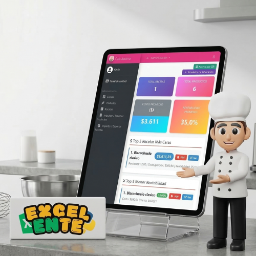

Pasteleros, panaderos, cocineros y emprendedores gastronómicos que quieren saber exactamente cuánto les cuesta cada receta.
Programa gratuito · Hecho para la comunidad · Sin suscripción
Calculá costos reales de tus recetas, porciones y producción.
Herramienta gratuita para pastelerías, panaderías y emprendedores gastronómicos. Descargala, usala y compartila con tu comunidad.
- 100% gratis, sin pagos ni suscripciones de ningún tipo
- Funciona en tu PC con Windows, sin necesitar internet
- Calculá ingredientes, equipos, gastos y margen en un solo lugar

Se instala en tu PC con Windows y se abre directo en el navegador. Sin internet, sin mensualidades.
Costo por receta, costo por porción, control de insumos, rentabilidad y carga masiva con Excel.
Es un programa gratuito creado por nuestra comunidad. Sin virus, sin trampas, sin pagos ocultos.
Dejá de calcular costos a mano o de memoria.
- Sabés exactamente cuánto te cuesta cada receta y cada porción.
- El programa suma ingredientes, gastos de luz y desgaste de equipos.
- Actualizás precios en segundos, sin volver a cargar todo desde cero.
Primeros pasos
3 pasos y listo.
1
Descargá y descomprimí
Hacé clic en “Descargar gratis” y descomprimí el ZIP en cualquier carpeta de tu PC.
2
Doble clic en ‘iniciar’
Abrí iniciar_windows.bat y el programa arranca solo en tu navegador.
3
Ver tutorial completo paso a paso →
¡Listo! Empezá a usarlo
Cargá tus ingredientes, tus recetas y empezá a ver tus costos reales.
¿Qué podés hacer?
- Calculá el costo real de cada receta y porción.
- Incluí el impacto de tus equipos y gastos en cada producto.
- Actualizá precios de ingredientes en masa usando Excel.
Dashboard de métricas
Es la página de inicio y da una visión general del emprendimiento con recetas caras, baratas, rentables, insumos destacados y alertas inteligentes.
- Total de recetas y productos
- Costo promedio y rentabilidad promedio
- Alertas por ingredientes sin precio, cantidades inválidas o costo total en cero
Equipos y electricidad
Incluí el costo de tu horno, batidora o heladera en cada receta, según el tiempo de uso y la electricidad que consumen.
- Desgaste del equipo por uso
- Costo eléctrico real
- Costo por porción más preciso
Productos en Excel
Permite descargar plantilla, exportar productos actuales y volver a importar cambios masivos de precios, cantidades, categorías o descripciones.
- Archivo .xlsx
- Actualizá uno o todos a la vez
- Ideal para catálogos grandes
Recetas en Excel
Exportá tus recetas a Excel, hacé los cambios que necesités y volvelas a importar. Antes de guardar, podés revisar todo.
- Previsualización antes de guardar
- Creación y actualización masiva
- Corrección segura de muchas recetas a la vez
Organización del negocio
Organizá tu negocio con categorías, usuarios y una configuración central donde ponés el nombre, logo y datos de tu emprendimiento.
- Roles y permisos
- Productos, recetas y fabricaciones
- Configuración en un solo lugar
Reportes y control
Ayuda a revisar tendencias, detectar inconsistencias y tomar decisiones de compra, precios o catálogo con más criterio.
- Top de insumos más usados
- Productos sin uso
- Recetas con rentabilidad a revisar
Preguntas frecuentes
FAQ
¿Es gratis?
Sí. El programa es 100% gratuito. Lo descargás, lo usás y no pagás nada, nunca.
¿Para qué tipo de negocio sirve?
Pastelerías, panaderías, cocinas y emprendimientos gastronómicos que necesitan costo por receta, costo por porción y margen real.
¿Funciona en Argentina y LATAM?
Sí. Cada negocio ajusta sus costos y moneda según el país donde trabaja.
¿Puedo sugerir mejoras o reportar problemas?
Sí. Si algo no funciona bien o tenés una idea, escribinos por nuestras redes y lo revisamos juntos.
Comunidad
Esta herramienta crece con cada uno de ustedes.
Si te ayudó a ordenar tus costos, compartila con otros pasteleros y panaderos. Cada persona que la conoce es un emprendedor más que puede trabajar con números claros.
¿Cómo ayudás sin hacer nada técnico?
- Compartí el video tutorial con un colega que lo necesite.
- Recomendá la herramienta en tu grupo de WhatsApp o redes.
- Dejá tu comentario en YouTube contando cómo te resultó.
Esta herramienta es gratuita y siempre lo será. Crecemos juntos ayudando a nuestra comunidad gastronómica.
Sobre mí
Excel-ente
Marca impulsada por Kevin A. Turkienich, enfocada en enseñar, construir y mejorar herramientas útiles con una comunicación clara y práctica.
Ver canal de YouTubeColaboración
ADEMA Sistemas
La atribución pública del proyecto debe preservarse. Esta herramienta se presenta como una colaboración entre EXCEL-ENTE y ADEMA Sistemas.
Visitar ADEMA SistemasLicencia
Apache 2.0
Puede usarse, modificarse y distribuirse libremente, siempre que se conserve el aviso de licencia original y la atribución requerida en distribuciones e instancias públicas.
“Esta herramienta la trae EXCEL-ENTE en colaboración con ADEMA Sistemas.”